1. The 3D Generation Frontier
Generative AI has achieved remarkable fidelity in 2D image synthesis, yet the leap to 3D content creation remains one of the most compelling open problems in machine learning. The challenge is not simply about adding a depth axis to existing pipelines — it demands modeling the underlying geometric and structural consistency that defines our physical world.
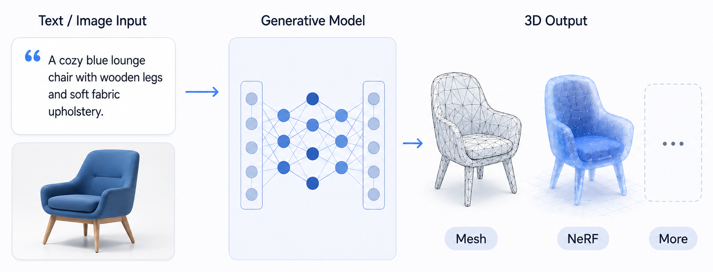
1.1 Defining the Task
At its core, 3D generation is the problem of mapping a sparse input — a text prompt such as "a corgi wearing a top hat" or a single 2D photograph — into a complete, navigable 3D asset (a textured mesh, a NeRF volume, or another representation that can be rendered from any viewpoint).
What makes this so difficult is the "black box" nature of the mapping. A single image captures only one viewpoint of an object. The generative model must hallucinate every hidden surface, unseen texture, and occluded internal structure. A photograph of a coffee mug shows you a handle and a logo, but the model must invent a plausible back, bottom, and interior — all while maintaining geometric consistency with the observed view. This is fundamentally an ill-posed inverse problem: infinitely many 3D shapes could explain the same 2D observation, and the model must learn strong priors to select a plausible one.
1.2 Why It Matters
The ability to generate 3D content automatically would transform at least three major domains:
- Entertainment and Creative Media. AAA game studios and VR/AR developers currently rely on months of manual modeling to populate virtual worlds. A reliable text-to-3D or image-to-3D system could compress asset creation from weeks to seconds, democratizing content creation for indie developers and enabling rapid iteration for large studios.
- Robotics and Autonomous Systems. Training embodied agents in simulation (the "sim-to-real" paradigm) requires vast libraries of diverse 3D environments. Generative 3D models can synthesize the object variety and scene complexity needed to bridge the gap between simulated training and real-world deployment.
- Industrial Design and Architecture. Digital twins — virtual replicas of physical products or buildings — are central to modern manufacturing and architecture workflows. Rapid 3D prototyping powered by generative models can accelerate the design-to-fabrication loop, enabling engineers to explore more concepts before committing to physical production or 3D printing.
The common thread across these applications is a shift from modeling to generating — scaling 3D content creation far beyond what manual workflows can sustain.
1.3 The Data Gap
In 2D vision, we are spoiled by the abundance of the internet. Web-scale datasets like LAION-5B provide upwards of 5 billion image-text pairs, and this data abundance is a primary driver behind the success of models like Stable Diffusion and DALL-E. The 3D world tells a starkly different story. Even the largest publicly available 3D repositories — Objaverse and ShapeNet combined — contain roughly 10 million models, yielding an approximate 500:1 ratio of 2D to 3D data.
This scarcity has profound consequences. Standard supervised learning, the recipe that powers 2D generation (train a large model on a large dataset), simply does not transfer to 3D. The dataset is too small, and the representation landscape is far more fragmented: unlike 2D pixels, which live on a uniform grid, 3D data comes in many forms — meshes with varying topology, point clouds of different densities, voxel grids at different resolutions, implicit neural fields. There is no single, universal "pixel" for 3D.
This data gap forces the field to get creative. As we will see in the next section, the first wave of breakthroughs came not from training on 3D data at all, but from cleverly repurposing the vast knowledge already encoded in 2D generative models.
2. Leveraging 2D Priors
If we cannot train powerful 3D generators from scratch due to data scarcity, can we instead borrow the intelligence of pre-trained 2D models? This is the central insight behind the family of methods known as 2D-to-3D lifting. These approaches exploit the fact that a diffusion model trained on billions of images has implicitly learned a great deal about 3D structure — it knows what objects look like from many angles, how lighting interacts with surfaces, and what geometries are physically plausible.
2.1 Optimization-based Lifting: Score Distillation Sampling
The landmark work DreamFusion (Poole et al., 2022) introduced a principled way to distill this 2D knowledge into a 3D representation. The approach requires no 3D training data whatsoever — only a frozen, pre-trained text-to-image diffusion model and a differentiable 3D renderer.
The workflow proceeds in four steps, iterated until convergence:
- Initialize a 3D representation — typically a Neural Radiance Field (NeRF) — with random parameters $\theta$.
- Render the current NeRF from a randomly sampled camera viewpoint, producing a 2D image $\mathbf{x} = g(\theta)$ via the differentiable renderer $g$.
- Critique the rendered image by passing it to the frozen 2D diffusion model (the "teacher"). The teacher evaluates how realistic the image looks given the text prompt $y$, effectively asking: "Does this 2D rendering look like a plausible photograph of the described object?"
- Update the 3D parameters $\theta$ by backpropagating the teacher's feedback through the renderer.
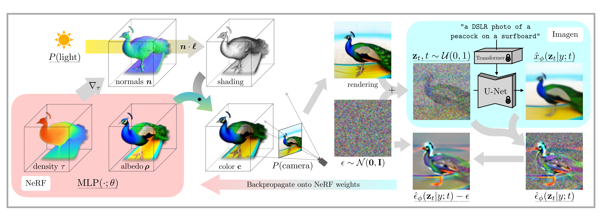
The mathematical engine driving this loop is Score Distillation Sampling (SDS). Rather than backpropagating through the full diffusion model (which is computationally prohibitive and numerically unstable), SDS provides an efficient gradient estimate by comparing the noise predicted by the diffusion teacher $\hat{\epsilon}_\phi$ against the actual noise $\epsilon$ that was added:
$$\nabla_\theta \mathcal{L}_{\text{SDS}} = \mathbb{E}_{t,\epsilon}\left[ w(t) \left( \hat{\epsilon}_\phi(z_t; y, t) - \epsilon \right) \frac{\partial g(\theta)}{\partial \theta} \right]$$Here $z_t$ is the rendered image $g(\theta)$ with noise added at diffusion timestep $t$, $w(t)$ is a timestep-dependent weighting, and $\hat{\epsilon}_\phi(z_t; y, t)$ is the noise predicted by the frozen diffusion model conditioned on text prompt $y$. The term $\frac{\partial g(\theta)}{\partial \theta}$ is the Jacobian of the differentiable renderer, which propagates the 2D signal back into 3D parameter space.
Intuitively, SDS computes a direction of improvement: the difference $(\hat{\epsilon}_\phi - \epsilon)$ tells us which way to push the rendered image so that it moves toward the high-density region of the diffusion model's learned distribution — that is, toward images that look more realistic and more consistent with the text prompt. This gradient is then backpropagated through the renderer to update the underlying 3D geometry and appearance. In essence, the 2D diffusion model acts as a frozen critic that never needs to be updated, while the 3D representation is iteratively sculpted to satisfy the critic from every viewpoint.
This is a remarkable "cheat code": we sidestep the 3D data bottleneck entirely by leveraging the implicit 3D understanding embedded in billions of 2D photographs.
2.2 Critical Failures of Lifting Methods
Despite its elegance, optimization-based lifting suffers from three fundamental limitations that prevent it from being production-ready:
The Janus Problem. Because the 2D diffusion teacher evaluates one rendered view at a time, it has no global awareness of 3D consistency. Each viewpoint is judged independently, which can lead to a pathological failure: the optimizer may place a face on every side of a head, or duplicate salient features across multiple views, because doing so locally satisfies each 2D critique. The result is multi-faced, geometrically incoherent objects — a defect named after the Roman god Janus, who is depicted with two faces. This artifact is particularly common for objects with a clearly defined "front" (faces, animals, vehicles).
Optimization Latency. Because DreamFusion and its variants optimize each asset from scratch through hundreds or thousands of rendering-critique-update iterations, generating a single 3D object typically requires 30 to 60 minutes of GPU time. This per-asset cost makes real-time or interactive applications impractical and rules out workflows that require generating thousands of assets at scale.
The SDS Trade-off. The mode-seeking nature of SDS tends to produce results that are over-saturated and cartoonish. To simultaneously satisfy the diffusion critic across all viewpoints, the optimization often converges to an "averaged" appearance that sacrifices fine textures and subtle details. Colors become unnaturally vivid, surfaces lose high-frequency detail, and the outputs lack the photorealism achievable in 2D generation.
The root cause of all three problems is the same: 2D models are fundamentally blind to 3D space. They can judge one 2D slice at a time, but they cannot reason about volumetric consistency, occlusion relationships, or global geometry. Overcoming these limitations requires moving beyond 2D priors toward models that natively understand three dimensions.
2.3 Multi-view Generation: A Middle Ground
Before abandoning 2D priors entirely, researchers explored a compelling intermediate strategy: generate consistent multi-view images first, then reconstruct 3D from those views. This paradigm retains the power of 2D diffusion models while introducing explicit mechanisms for cross-view consistency.
One-2-3-45++ (Liu et al., 2024) exemplifies this approach with a pipeline that transforms a single input image into a detailed textured mesh in under one minute:
- Consistent Multi-view Generation. A fine-tuned 2D diffusion model (based on Stable Diffusion) generates six views of the object simultaneously. Rather than predicting each view independently, the model tiles all six views into a single composite image, allowing the diffusion process to enforce inter-view consistency through shared attention. The input image provides both local conditioning (via reference attention) and global conditioning (via CLIP features).
- Multi-view Conditioned 3D Diffusion. The generated multi-view images are fed to a pair of 3D-native diffusion networks operating in a coarse-to-fine manner. First, a 3D convolutional UNet denoises a low-resolution ($64^3$) occupancy volume to capture the overall shape. This coarse volume is then subdivided, and a second diffusion network using 3D sparse convolution refines the shape into a high-resolution ($128^3$) sparse volume with SDF and color predictions. Multi-view features (extracted via DINOv2 and back-projected into 3D) guide both stages, providing rich local conditioning.
- Texture Refinement. A lightweight optimization pass refines the mesh texture by leveraging the consistent multi-view images as supervision, producing the final textured 3D output.
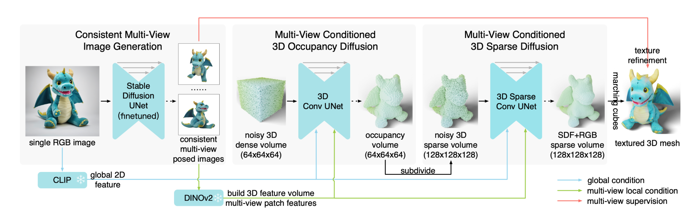
This approach offers substantial improvements over pure SDS-based lifting:
- Speed: The entire pipeline completes in roughly one minute on a single A100 GPU, compared to 30–60 minutes for DreamFusion-style methods.
- View Consistency: By generating all views jointly in a single diffusion pass, the multi-face Janus problem is significantly mitigated.
- Quality: The 3D-native diffusion stages, trained on actual 3D data from Objaverse, produce geometrically coherent volumes rather than relying on per-view optimization.
However, multi-view methods still inherit limitations from their 2D backbone. The quality of the final 3D asset is bounded by the consistency of the generated multi-view images — any remaining cross-view discrepancies propagate into geometric artifacts during reconstruction. The 2D diffusion model, while fine-tuned for this task, was not originally designed to reason about 3D geometry, and its implicit 3D understanding has limits.
Still, the multi-view paradigm represents an important conceptual bridge. By introducing 3D-native diffusion networks in the reconstruction stage, One-2-3-45++ demonstrates that the field is already moving toward models that operate directly in 3D space. The natural next question is: can we cut out the 2D middleman entirely and generate 3D content natively? This is the frontier we explore in the remainder of this survey.
3. Transitioning to Native 3D Generation
The limitations of 2D-to-3D lifting — the Janus problem, optimization latency, and the inherent blindness of 2D priors to volumetric structure — point to a clear conclusion: if we want 3D models that are fast, consistent, and geometrically coherent, we must train them directly on 3D data. This realization gave rise to the native 3D generation paradigm: models that learn from explicit 3D geometric datasets, produce outputs through feed-forward inference rather than iterative optimization, and reason in three dimensions from the ground up. No rendering-critique loops, no per-asset optimization — just a single forward pass from input to 3D output.
3.1 What Makes a Model "Native"?
The distinction between 2D-lifting and native 3D generation is not merely architectural — it reflects a fundamentally different philosophy about where 3D knowledge should come from. The following table summarizes the key differences:
| Feature | 2D-Lifting (Optimization) | Native 3D (Inference) |
|---|---|---|
| Knowledge Source | 2D Image Priors (Implicit) | 3D Geometric Datasets (Explicit) |
| Process | Iterative Optimization | Feed-forward Inference |
| Speed | Minutes to Hours | Milliseconds to Seconds |
| Consistency | Heuristic (Janus-prone) | Inherently 3D Consistent |
In a 2D-lifting approach like DreamFusion, the model never sees actual 3D geometry during training — it relies on the implicit 3D understanding embedded in billions of 2D photographs. A native 3D model, by contrast, is trained on explicit 3D supervision: meshes, point clouds, voxel grids, or neural fields drawn from datasets like Objaverse and ShapeNet. This shift from implicit to explicit 3D knowledge is what eliminates the Janus problem at its root and enables generation in milliseconds rather than minutes.
But before we can train generative models on 3D data, we need to decide how to represent that data. Unlike 2D images, which live on a uniform pixel grid, the 3D world offers no single canonical representation — and the choice of representation profoundly shapes what a generative model can learn, how efficiently it can operate, and what artifacts it will produce.
3.2 Early Representations: The Building Blocks
The landscape of 3D representations can be broadly divided into discrete (explicit) and continuous (implicit) families. Each makes different trade-offs between memory efficiency, geometric fidelity, and compatibility with generative modeling.
Voxels are the most direct 3D analogue of pixels: a regular grid of volume elements, where each cell stores an occupancy value (or color, density, etc.). The appeal is conceptual simplicity — voxels inherit the spatial regularity that makes 2D convolutions so effective, and standard 3D CNNs can operate on them directly. The fatal limitation is cubic memory scaling: a voxel grid of resolution $N$ requires $O(N^3)$ storage. At $64^3$ this is manageable (~260K voxels), but at $512^3$ the grid contains over 134 million cells — far beyond the memory budget of consumer GPUs. In practice, voxel-based methods are confined to low resolutions, producing characteristically blocky outputs that lack fine geometric detail.
Point clouds take a radically different approach: instead of filling all of space, they represent a shape as a set of discrete $(x, y, z)$ coordinates sampled on the object's surface (often with associated colors or normals). Memory scales as $O(N)$ in the number of points, making point clouds vastly more efficient than voxels for a given level of surface detail. However, point clouds are fundamentally unstructured: they carry no information about surface connectivity, topology, or the space between points. A point cloud of a coffee mug is just a cloud of dots — it cannot tell you which points form the handle versus the rim, and converting it to a watertight mesh is a non-trivial reconstruction problem that often introduces artifacts.
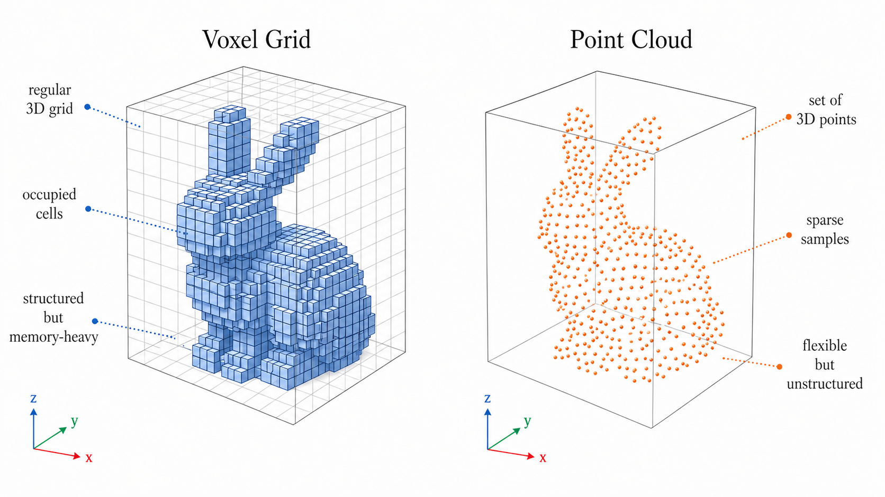
Signed Distance Functions (SDFs) belong to the continuous representation family. An SDF is a function $f: \mathbb{R}^3 \to \mathbb{R}$ that maps any point in space to the signed distance to the nearest surface: negative values indicate the interior of the object, positive values indicate the exterior, and the zero-crossing $\{x : f(x) = 0\}$ defines the surface itself. In practice, $f$ is parameterized by a neural network (often an MLP), making the representation resolution-independent — the surface can be queried at arbitrary precision without increasing memory. SDFs naturally produce smooth, watertight surfaces, and meshes can be extracted via algorithms like Marching Cubes. The challenge for generative modeling is that each shape is encoded as the weights of a neural network, and generating a new set of MLP weights from scratch is a fundamentally harder problem than generating a grid of values.
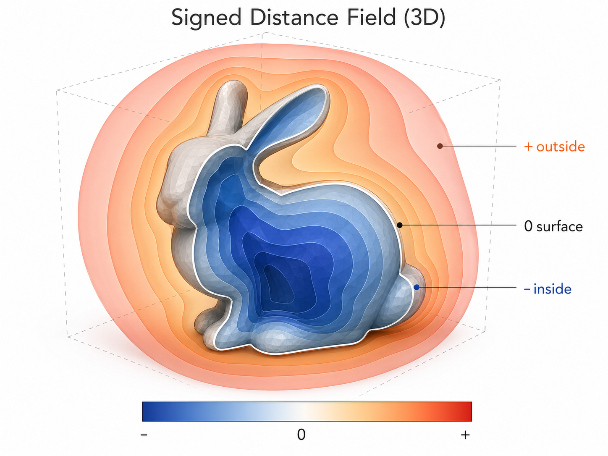
Neural Radiance Fields (NeRFs) extend the continuous representation idea to include appearance. A NeRF represents a 3D scene as a function $F_\Theta: (\mathbf{x}, \mathbf{d}) \mapsto (\mathbf{c}, \sigma)$ that maps a spatial coordinate $\mathbf{x}$ and viewing direction $\mathbf{d}$ to an RGB color $\mathbf{c}$ and volumetric density $\sigma$. Novel views are rendered by casting rays through the volume and integrating color and density along each ray via volume rendering. NeRFs achieve photorealistic quality and are resolution-independent, but they share the same generative challenge as SDFs: each scene is a separate neural network, and producing new NeRFs requires either per-scene optimization or learning to generate network parameters directly.
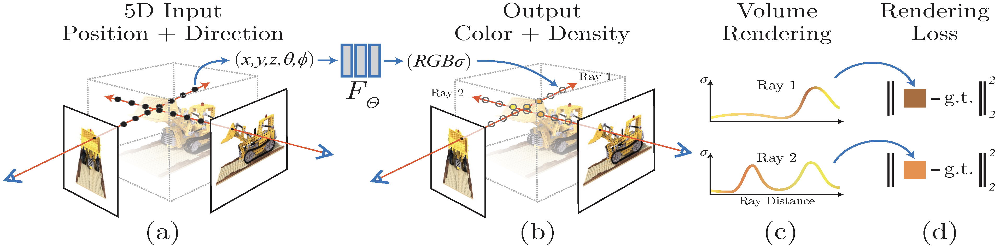
In summary, the representation landscape presents a dilemma. Discrete representations (voxels, point clouds) are easy to generate but lack either resolution or structure. Continuous representations (SDFs, NeRFs) offer unlimited resolution and photorealism but are hard to produce with feed-forward generative models. The earliest native 3D generators navigated this tension by working with the most generation-friendly representations — point clouds — and accepting the resulting quality trade-offs.
3.3 Point-E: Fast but Coarse
Point-E (Nichol et al., 2022) was one of the first systems to demonstrate that text-to-3D generation could be made practical by operating directly on 3D data rather than optimizing through 2D priors. The key insight was architectural simplicity: rather than solving the full text-to-3D problem in a single model, Point-E decomposes it into two well-understood sub-problems connected in a pipeline.
Stage 1: Text to Synthetic View. A text prompt (e.g., "a corgi") is fed to a fine-tuned version of GLIDE, a 3-billion-parameter text-to-image diffusion model trained on rendered views of 3D assets. GLIDE produces a single synthetic image that serves as a visual bridge between language and geometry.
Stage 2: Image to Point Cloud. The synthetic image conditions a stack of point cloud diffusion models built on a Transformer architecture. A base model first generates a coarse point cloud of 1,024 points, and an upsampler refines it to 4,096 points with associated RGB colors. Each point is represented as a 6-dimensional vector $(x, y, z, r, g, b)$, and the diffusion process operates directly on this $K \times 6$ tensor — starting from Gaussian noise and iteratively denoising into a coherent colored point cloud. Crucially, the model is permutation-invariant: it uses no positional encodings, treating the point cloud as an unordered set.
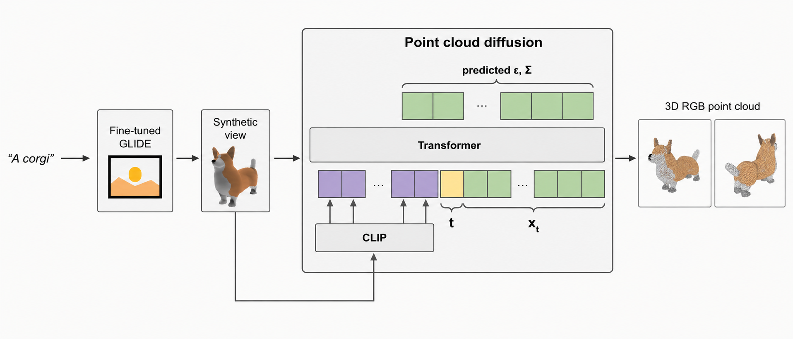
The practical impact was striking. Point-E produces a 3D object in approximately 1–2 V100-minutes (with the text-to-image step; the point cloud diffusion alone takes roughly 16 V100-seconds), compared to the 12+ V100-hours required by DreamFusion. This represents a speedup of one to two orders of magnitude. On the CLIP R-Precision benchmark (which measures alignment between generated 3D objects and text prompts), Point-E achieved 45.6% (ViT-L/14, 300M model) — below optimization-based methods like DreamFusion (79.7%) but at a fraction of the compute cost.
However, the limitations of the point cloud representation quickly became apparent. With only 4,096 points, the geometric detail is inherently coarse — fine features like thin handles, intricate textures, or small appendages are poorly captured. The point cloud-to-mesh conversion step (which fits an SDF via regression and applies Marching Cubes) introduces further information loss. And the two-stage pipeline means errors compound: if GLIDE produces a misleading synthetic view, the point cloud model has no mechanism to recover. The authors themselves acknowledged that Point-E "still falls short of the state-of-the-art in terms of sample quality," positioning it as a practical trade-off rather than a quality frontier.
3.4 Why Direct Generation Isn't Enough
Point-E proved that native 3D generation is viable and fast, but it also exposed three fundamental bottlenecks that limit direct generation approaches:
The Dimensionality Constraint. Any representation that discretizes 3D space on a regular grid faces cubic scaling: $O(N^3)$ memory and compute for resolution $N$. A $64^3$ voxel grid is tractable; a $256^3$ grid is expensive; a $512^3$ grid — the resolution needed for production-quality assets — exceeds the memory of most GPUs. Even point clouds, which scale linearly, require tens of thousands of points to capture fine detail, pushing against the sequence-length limits of Transformer architectures. The dimensionality of raw 3D data is simply too high for direct generative modeling at the resolutions that downstream applications demand.
Geometric Discontinuity. Point clouds lack surface connectivity, making them ill-suited for applications that require watertight meshes, physics simulation, or UV mapping. Converting point clouds to meshes is a lossy, error-prone post-processing step. Meshes themselves are non-differentiable (vertex positions and face connectivity are discrete), making them difficult to optimize with gradient-based methods. SDFs and NeRFs are smooth and differentiable but encode each shape as a separate neural network, complicating generation. No single raw representation is simultaneously generation-friendly, high-resolution, and application-ready.
The Diversity Gap. Training a single generative model to produce diverse 3D objects across thousands of categories (chairs, animals, vehicles, buildings) with a unified architecture is remarkably unstable when operating directly in raw 3D space. The geometric variation across categories is enormous — the topology of a donut is fundamentally different from that of a tree — and direct methods often require category-specific templates or architectures to achieve acceptable quality. Open-vocabulary, cross-category generation remains elusive for models that operate in raw representation space.
The conclusion is clear: high-resolution, diverse, and application-ready 3D generation cannot be achieved by scaling up direct methods alone. What is needed is a way to compress the high-dimensional 3D data into a compact, structured latent space — one that tames the dimensionality curse, abstracts away representation-specific discontinuities, and enables a single generative model to operate across diverse categories. This is precisely the insight that drives the latent 3D generation paradigm.
4. Latent 3D Generation
The bottlenecks of direct 3D generation — cubic dimensionality, geometric discontinuity, and cross-category diversity — all share a common root: the generative model is forced to operate in a raw, high-dimensional representation space that was never designed for generation. The same realization catalyzed the transition from pixel-space to latent-space diffusion in 2D imaging, and it now drives the most significant advances in 3D.
4.1 Why Latent Space?
The 2D success story is instructive. Stable Diffusion does not denoise in pixel space. Instead, a pre-trained VAE compresses each $H \times W$ image into a much smaller $h \times w$ latent grid, the diffusion model operates entirely in that compressed space, and a decoder maps the denoised latent back to pixels. This division of labor is crucial: the VAE absorbs the burden of high-frequency detail and perceptual fidelity, freeing the diffusion model to focus on semantic structure and global coherence in a space that is orders of magnitude smaller.
The same insight applies to 3D. Rather than asking a diffusion model to generate millions of voxel values, tens of thousands of point coordinates, or the weights of an implicit neural field, we can first learn an encoder that compresses 3D data into a compact latent representation, train a diffusion (or flow) model to generate new samples in that latent space, and then use a decoder to map the generated latent back to a full 3D output. The general pipeline is:
$$\text{3D Data} \xrightarrow{\text{Encoder}} \mathbf{z} \in \text{Latent Space} \xrightarrow{\text{Diffusion / Flow}} \hat{\mathbf{z}} \xrightarrow{\text{Decoder}} \text{3D Output}$$This factorization offers three immediate benefits. First, the latent space is far lower-dimensional than the raw 3D representation, making the generative modeling problem tractable. Second, the encoder and decoder can be tailored to a specific 3D representation (meshes, SDFs, radiance fields) while the generative model sees only a uniform latent interface, enabling cross-representation flexibility. Third, the compressed latent can be aligned with other modalities — images, text — via contrastive or other alignment losses, enabling conditional generation from diverse inputs.
But as we will see, not all latent spaces are created equal. The design of the 3D latent space — its structure, compactness, and localizability — turns out to be the central factor that separates early, blurry results from the high-fidelity generation we see today.
4.2 Michelangelo: The First Latent 3D Pipeline
Michelangelo (Zhao et al., 2023) was among the first works to instantiate the latent 3D generation paradigm end-to-end. Its core idea is alignment before generation: align the 3D shape latent space with the image and text modalities first, then train a diffusion model to generate in the aligned space. The framework comprises three stages:
Stage 1 — SITA-VAE (Shape-Image-Text-Aligned Variational Auto-Encoder). A perceiver-based 3D shape encoder ingests a point cloud sampled from the object surface and compresses it into a sequence of shape latent embeddings $\mathbf{E}_s$ via cross-attention with a set of learnable query tokens. Crucially, the encoder is trained not only with a reconstruction loss and KL divergence but also with contrastive losses that pull the shape embeddings close to the corresponding CLIP image and text embeddings in a shared feature space. This multi-modal alignment bridges the distribution gap between 3D shapes and the 2D image/text domains, enabling the downstream diffusion model to condition effectively on either modality. A transformer-based decoder reconstructs the occupancy field from the shape embeddings: given a query 3D point $\mathbf{x}$, it computes iterative cross-attention against $\mathbf{E}_s$ to predict the occupancy value $\mathcal{O}(\mathbf{x})$.
Stage 2 — ASLDM (Aligned Shape Latent Diffusion Model). With the SITA-VAE frozen, an aligned shape latent diffusion model is trained to denoise in the learned latent space. The ASLDM uses a UNet-like skip-connection-based transformer architecture conditioned on CLIP image or text features. It learns the probabilistic mapping from image or text inputs to shape latent embeddings, generating new shape embeddings that are semantically consistent with the conditioning input.
Stage 3 — Decoding to Mesh. The generated shape embeddings are passed to the frozen SITA-VAE decoder, which predicts an occupancy field. The occupancy field is then converted to an explicit mesh via Marching Cubes.
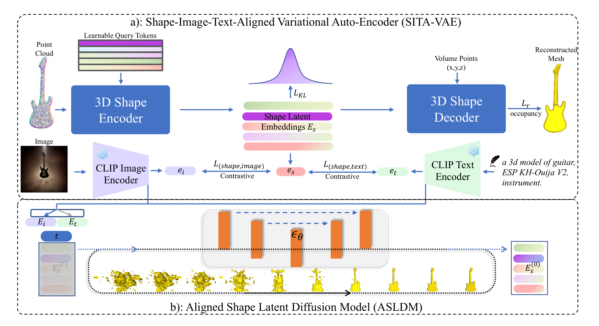
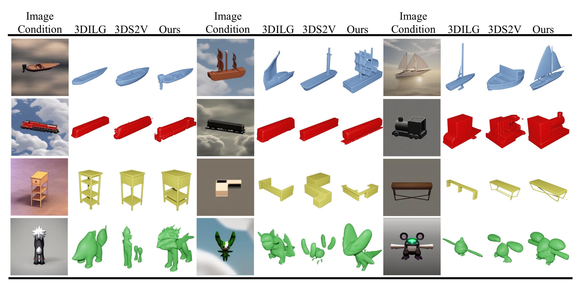
Michelangelo successfully validated the latent 3D generation concept: it could produce 3D shapes from text or image inputs in a single forward pass, with outputs that were semantically aligned to the conditioning signal. However, the results were notably blurry and low-resolution — shapes were recognizable but lacked fine geometric detail, with surfaces appearing over-smoothed and small features washed out.
What went wrong? Part of the answer is the familiar VAE compression bottleneck: any lossy encoding sacrifices some detail, and the reconstruction quality of the VAE sets an upper bound on generation quality. But this alone does not explain the gap. After all, 2D latent diffusion models also use VAE compression and still produce strikingly detailed images. The deeper issue lies in a structural difference between 2D and 3D latent spaces — one that Michelangelo's design did not address.
4.3 The Core Insight: Structured vs. Unstructured Latents
To understand why early 3D latent diffusion models lagged so far behind their 2D counterparts, we need to examine what makes a latent space "easy" for a generative model to work with.
In 2D latent diffusion, the latent space is highly structured. The VAE encoder compresses an $H \times W$ image into an $h \times w$ grid of latent codes, where each code corresponds to a specific spatial patch of the original image. This grid structure is inherited directly from the pixel grid: the latent code at position $(i, j)$ always describes the content of the same image region. As a result, the diffusion model never has to learn where things go — spatial layout is baked into the grid. It only needs to learn what to generate at each location. This decomposition makes the generation task dramatically simpler.
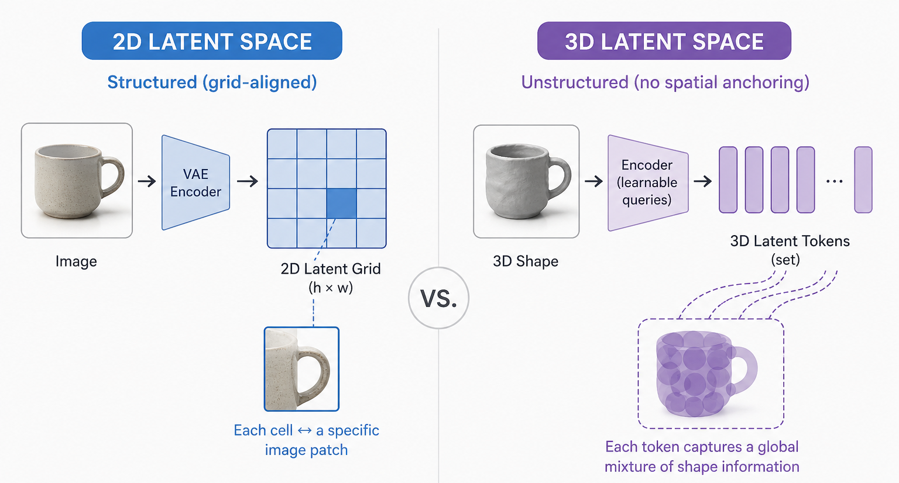
In contrast, the 3D latent space used by Michelangelo (and similar early methods) is unstructured. The encoder produces a set of latent tokens through learnable queries, but these tokens have no fixed correspondence to spatial regions of the 3D shape. Each token captures some global mixture of shape information, with little localizability — you cannot point to a token and say "this one describes the handle of the mug." The diffusion model must therefore jointly learn both where to place structure in 3D space and what content to generate at each location. This joint learning problem is fundamentally harder: the model must simultaneously discover the spatial layout of the shape and fill in its fine details, navigating a much larger and more ambiguous search space.
This is the core insight that separates the first generation of 3D latent methods from the current state of the art:
Jointly learning structure and content makes 3D generation unnecessarily hard. The key to better 3D generation is designing a latent space that is both compact and structured — one that separates the "where" from the "what."
Two leading paradigms have emerged in pursuit of this goal: VecSet, which compresses 3D shapes into compact token sets with implicit spatial correlation, and Sparse Voxel, which anchors latent codes to explicit 3D grid positions. More recently, a third paradigm — VoxSet — combines the best properties of both. We examine each in turn.
4.4 VecSet: From Radial Basis Functions to Latent Tokens
The VecSet representation, introduced by 3DShape2VecSet (Zhang et al., 2023), takes a principled approach to designing a compact 3D latent space. Rather than inventing a representation from scratch, the authors trace an elegant derivation that starts from classical radial basis functions and arrives at a modern, attention-based latent set through three progressive upgrades.
Step 1: Classical RBF. A continuous function (such as an occupancy field) can be approximated by a weighted sum of radial basis functions centered at a set of anchor points:
$$\hat{\mathcal{O}}_{\text{RBF}}(\mathbf{x}) = \sum_{i=1}^{M} \lambda_i \cdot \varphi(\|\mathbf{x} - \mathbf{x}_i\|)$$Here $\varphi$ is a handcrafted radial kernel that measures similarity between the query point $\mathbf{x}$ and each anchor $\mathbf{x}_i$, and $\lambda_i \in \mathbb{R}$ is a scalar weight. The representation of a shape is the set $\{\lambda_i \in \mathbb{R},\, \mathbf{x}_i \in \mathbb{R}^3\}_{i=1}^M$. This is conceptually clean but practically limited: because each anchor carries only a scalar weight, a very large number of points ($M$ on the order of tens of thousands) is needed to capture fine detail.
Step 2: Neural Field Upgrade. The first improvement replaces the scalar weights $\lambda_i$ with learned feature vectors $\mathbf{f}_i \in \mathbb{R}^C$, and decodes via an MLP rather than direct summation:
$$\hat{\mathcal{O}}(\mathbf{x}) = \text{MLP}(\mathbf{f}_{\mathbf{x}}), \quad \mathbf{f}_{\mathbf{x}} = \sum_{i=1}^{M} \mathbf{f}_i \cdot \frac{\varphi(\mathbf{x}, \mathbf{x}_i)}{Z(\mathbf{x}, \{\mathbf{x}_i\}_{i=1}^M)}$$where $Z$ is a normalizing factor. The representation becomes $\{\mathbf{f}_i \in \mathbb{R}^C,\, \mathbf{x}_i \in \mathbb{R}^3\}_{i=1}^M$. Because each anchor now carries a rich, high-dimensional feature rather than a single scalar, significantly fewer anchors are needed to represent the same level of detail. However, the kernel $\varphi$ is still handcrafted, and the explicit coordinates $\mathbf{x}_i$ must be stored.
Step 3: Attention Replaces Kernels. The final step replaces the handcrafted kernel $\varphi$ with cross-attention, and drops the requirement for explicit anchor coordinates:
$$\hat{\mathcal{O}}(\mathbf{x}) = \text{FC}(\mathbf{f}_{\mathbf{x}}), \quad \mathbf{f}_{\mathbf{x}} = \text{CrossAttn}(\mathbf{x},\, \mathbf{f})$$The cross-attention mechanism learns to compute the interpolation weights directly from the query coordinate and the latent features, subsuming the role of the radial kernel. The explicit coordinates $\{\mathbf{x}_i\}$ are no longer needed — the representation reduces to a pure set of latent vectors:
$$\text{VecSet}: \quad \{\mathbf{f}_i \in \mathbb{R}^C\}_{i=1}^M$$This is the VecSet representation: a 3D shape is encoded as a fixed-length array of $M$ latent vectors, each of dimension $C$. The decoder recovers the occupancy (or SDF) value at any query point $\mathbf{x}$ by cross-attending against this latent set and passing the result through a fully connected layer.
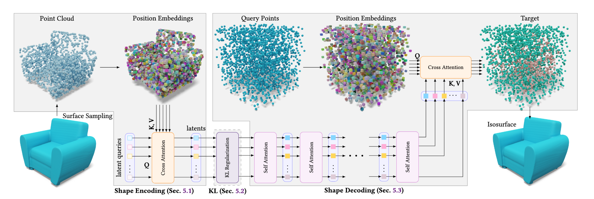
Encoder Design: Learnable vs. Point Queries. To encode a point cloud into a VecSet, 3DShape2VecSet proposes two strategies. The first uses learnable queries — a fixed set of learned embeddings that cross-attend into the input point cloud (this is the approach Michelangelo adopted). The second uses point queries — a subset of points sampled from the input point cloud itself (via farthest point sampling), whose positional embeddings serve as the query set.
Ablation studies in the original paper show that point queries consistently outperform learnable queries. The reasons are twofold. First, point queries are input-dependent: each query is tied to an actual surface location, so the resulting latent tokens are naturally correlated with specific spatial regions of the shape. This means that even though the VecSet representation discards explicit coordinates, each latent token implicitly encodes positional information — it "secretly" knows which region of the shape it describes. Second, point queries enable flexible token counts: the number of queries can be varied at encoding and decoding time (e.g., starting from 1,024 during training and scaling to 3,072 at test time for better quality), whereas learnable queries are fixed at training time.
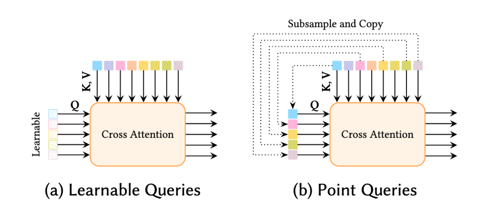
Strengths. VecSet is remarkably compact and efficient — as few as 512 latent vectors of dimension 512 can represent a full 3D shape with high fidelity. The representation is naturally compatible with Transformer architectures (it is just a set of tokens), and its flexible token count enables progressive training strategies that reduce cost.
Limitations. Despite the implicit positional information encoded by point queries, VecSet lacks explicit spatial structure. The positional information is hidden inside the latent features and cannot be directly accessed or utilized during generation. The generative model still faces the joint learning problem: it must simultaneously discover the spatial arrangement of the shape and fill in geometric detail. This makes training harder and limits the quality ceiling, particularly for shapes with complex topology or fine surface detail.
VecSet has nonetheless proven to be a highly influential representation. Follow-up works including CLAY, Hunyuan3D 2.0, TripoSG, and Step1X-3D all build on the VecSet paradigm, achieving progressively better results through larger datasets, improved training recipes, and architectural refinements — but all inherit the fundamental limitation of implicit structure.
4.5 Sparse Voxel: Structure Meets Efficiency
If VecSet sacrifices structure for compactness, can we go the other direction — build a latent space that is explicitly structured, like the 2D pixel grid, without drowning in the $O(N^3)$ cost of dense voxels?
The answer comes from a simple geometric observation: 3D shapes are sparse. A typical object occupies only a small fraction of its bounding volume — most of the space is empty air. A dense $64^3$ voxel grid contains over 260,000 cells, but only about 20,000 of them (on average) intersect the object's surface. The remaining 93% are wasted storage. By keeping only the active voxels — those that are occupied or near the surface — we can retain the structural benefits of a 3D grid while dramatically reducing memory and compute.
This idea, introduced in XCube and brought to prominence by Trellis (Xiang et al., CVPR 2025), yields the Structured LATent (SLAT) representation:
$$\mathbf{z} = \{(\mathbf{z}_i, \mathbf{p}_i)\}_{i=1}^L, \quad \mathbf{z}_i \in \mathbb{R}^C, \quad \mathbf{p}_i \in \{0, 1, \ldots, N-1\}^3$$Here $\mathbf{p}_i$ is the positional index of an active voxel in the 3D grid, $\mathbf{z}_i$ is a local latent vector attached to that voxel, $N$ is the spatial resolution of the grid, and $L$ is the total number of active voxels. The critical point is that $L \ll N^3$: for a grid with $N = 64$, the average number of active voxels is approximately $L \approx 20\text{K}$, compared to $N^3 \approx 262\text{K}$ for the full dense grid.
The SLAT representation cleanly separates the "where" from the "what":
- The positions $\{\mathbf{p}_i\}$ outline the coarse structure of the 3D asset — where the object exists in space.
- The latents $\{\mathbf{z}_i\}$ capture the fine-grained details of geometry and appearance — what the surface looks like at each location.
This is almost exactly the same decomposition that makes 2D latent spaces so effective: the grid positions provide structure for free, and the latent codes carry content. The only difference from the 2D case is that we discard the empty cells.
Encoding. Trellis constructs the SLAT representation without requiring any pre-fitted 3D data. For each 3D asset, the system first voxelizes the shape to determine the set of active voxels $\{\mathbf{p}_i\}$. To populate the local latents $\{\mathbf{z}_i\}$ with rich information, Trellis leverages the powerful DINOv2 vision foundation model: it renders dense multi-view images of the 3D asset, extracts feature maps using DINOv2, and back-projects these features onto the active voxels by averaging across views. The resulting voxelized features are then compressed through a Sparse VAE (using a transformer-based encoder-decoder with shifted window attention adapted for 3D sparse tensors) to produce the final structured latents.
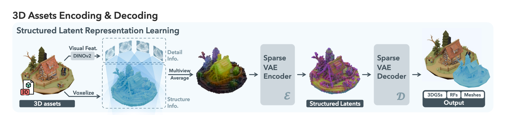
Decoding. The SLAT representation supports decoding into multiple output formats through separate decoder heads — 3D Gaussians for real-time rendering, Radiance Fields for photorealistic novel views, and Meshes (via FlexiCubes) for downstream applications. Each decoder shares the same transformer architecture but uses format-specific output layers and reconstruction losses.
Two-Stage Generation. With the "where" and "what" cleanly separated, Trellis adopts a two-stage generation pipeline that directly exploits this decomposition:
- Structure Generation. A rectified flow transformer $\mathcal{G}_S$ generates the sparse structure $\{\mathbf{p}_i\}_{i=1}^L$ — the binary occupancy grid indicating which voxels are active. This determines the coarse shape of the object.
- Latent Generation. Given the generated structure, a second rectified flow transformer $\mathcal{G}_L$ (designed for sparse data) generates the local latents $\{\mathbf{z}_i\}_{i=1}^L$ conditioned on the sparse structure and the input text/image.
This decoupled pipeline is fundamentally easier to train than joint generation. Each model focuses on one sub-problem: the first model only learns spatial layout (where things go), and the second model only learns local content (what things look like), conditioned on the layout. This mirrors the decomposition that makes 2D latent diffusion so effective, and it yields substantially better results than joint approaches.
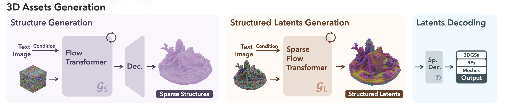
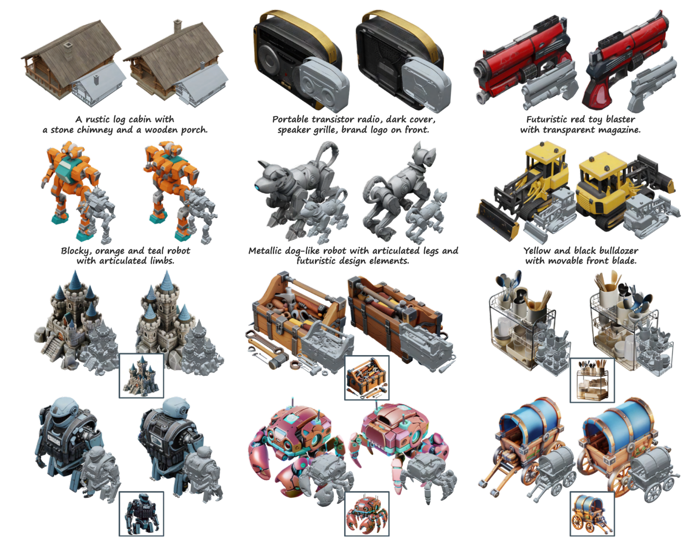
Strengths. The SLAT representation is highly structured — every latent code has an explicit 3D position that can be directly used during generation and downstream tasks like local editing. The decoupled training pipeline is easier to optimize than joint approaches, and the locality of the representation enables flexible editing (e.g., modifying only the voxels within a bounding box). Despite the sparsity, the representation remains relatively compact compared to dense voxels: $L \ll N^3$ by a large margin.
Limitations. Even with sparsity, the active voxel count (~20K) is significantly larger than a typical VecSet (512–3,072 tokens), making Sparse Voxel representations less compact and more computationally expensive for training and inference. The reliance on sparse convolutions and specialized sparse tensor libraries adds system complexity that standard Transformer pipelines do not require.
Follow-up works building on the Sparse Voxel paradigm include Hi3DGen, SparseFlex, and Sparc3D, each pushing the quality and efficiency boundaries further while retaining the core insight of structured sparsity.
4.6 VoxSet: The Best of Both Worlds
VecSet is compact and Transformer-friendly but lacks explicit structure. Sparse Voxel is richly structured but less compact and system-complex. A natural question arises: can we combine the compactness of VecSet with the explicit structure of Sparse Voxel?
LATTICE (Lai et al., 2025) answers this question affirmatively by introducing VoxSet, a semi-structured latent representation that merges the two paradigms. The key modification is deceptively simple: replace the point queries used in the VecSet encoder with voxel queries — queries anchored at the centers of active voxels on a coarse 3D grid, rather than at sampled surface points.
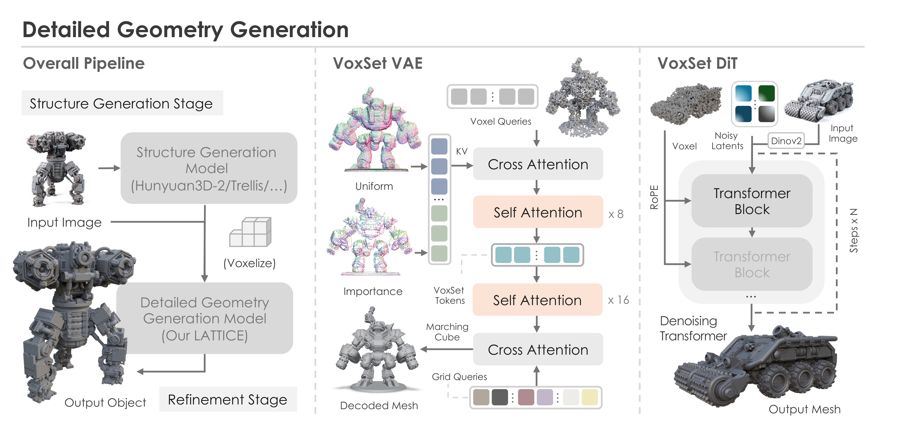
This seemingly minor change has profound consequences. Recall that in VecSet with point queries, each latent token implicitly encodes positional information because it was computed from a specific surface point — but this information is hidden and inaccessible at generation time, since the point positions are unknown when generating from scratch. Voxel queries solve this problem: because each query is anchored to a voxel on a known grid, the position of every latent token is explicit and available during generation. The positions can be obtained at test time by voxelizing the output of any off-the-shelf coarse geometry generator (e.g., Hunyuan3D-2 or Trellis).
LATTICE adopts a two-stage pipeline that leverages this explicit structure:
- Structure Generation. A first-stage model (which can be any existing 3D generator) produces a coarse mesh from the input image. This mesh is voxelized to obtain the sparse set of active voxel positions.
- Detailed Geometry Generation. A rectified flow transformer generates VoxSet latents conditioned on the input image, using the voxel positions from the first stage as localizable guidance via Rotary Positional Embedding (RoPE). The generated latents are decoded through the VoxSet VAE to produce a high-resolution SDF, from which the final mesh is extracted via Marching Cubes.
The use of RoPE is critical. By injecting the 3D voxel coordinates as positional embeddings into the Transformer, the model can directly exploit spatial structure during the denoising process — each latent token "knows" where it sits in 3D space. This decouples structure from content in the same spirit as Sparse Voxel methods, but within a pure Transformer framework that avoids sparse convolutions entirely.
Core Finding. The authors of LATTICE articulate what is perhaps the most important insight to emerge from the structured latent literature: localizable guidance is what truly matters for detailed geometry generation. It is not the latent representation itself (VecSet vs. Sparse Voxel) that determines quality, but whether the generative model has access to explicit spatial information that can decouple the "where" from the "what." VoxSet achieves this by anchoring VecSet tokens to voxel positions and feeding those positions to the Transformer via RoPE.
Scaling. LATTICE demonstrates strong scaling behavior in both model size (from 0.6B to 4.5B parameters) and, remarkably, at test time: a model trained with 6,144 tokens can be directly evaluated with 12,288 or even 24,576 tokens, yielding consistent quality improvements without retraining. This test-time scaling property stems from the flexibility of the VecSet architecture and the resolution-independence of voxel queries with jittering.
4.7 Comparing Structured 3D Latents
The three latent representations — VecSet, Sparse Voxel, and VoxSet — represent a progression toward latent spaces that are simultaneously compact, structured, and generation-friendly. The following table summarizes their key properties:
| Property | VecSet | Sparse Voxel | VoxSet |
|---|---|---|---|
| Compactness | High | Medium | High |
| Structure | Implicit | Explicit | Explicit |
| Localizability | Hidden | Direct | Direct |
| Training | Joint (harder) | Decoupled | Decoupled |
| Backbone | Transformer | Transformer + Sparse Conv | Transformer |
The progression tells a clear story. VecSet demonstrated that compact latent sets can represent 3D shapes effectively, but its implicit structure forces the generative model into difficult joint learning. Sparse Voxel introduced explicit spatial structure that cleanly decouples the "where" from the "what," making generation easier and output quality substantially higher — but at the cost of increased latent size and system complexity. VoxSet combines the best of both: it retains VecSet's compactness and Transformer compatibility while adding the explicit, localizable structure that enables decoupled generation and strong scaling.
The central lesson from this evolution is that latent space design is the bottleneck of 3D generation. The same generative architectures (diffusion models, rectified flow transformers) that produce stunning 2D images will underperform in 3D if the latent space forces them to jointly reason about spatial structure and local content. Conversely, a well-designed latent space that provides explicit spatial guidance can dramatically simplify the generation task, closing the gap between 2D and 3D generation quality. How best to represent 3D latents — balancing compactness, structure, localizability, and compatibility with modern architectures — remains the "dark cloud" over the field, and the most active frontier of current research.
5. Current Trend: Combining Generation and Reconstruction
While the latent space question remains open, the field is simultaneously expanding the scope of what 3D generation can achieve. One of the most compelling current trends is the unification of 3D generation and 3D reconstruction into a single framework — a direction that mirrors a fundamental human capability and holds particular promise for embodied AI.
5.1 Motivation: Perception Meets Imagination
Consider a simple everyday act: you see a coffee mug on a table, photographed from the front. You can immediately identify the cat illustration printed on its surface, estimate that you are viewing it from roughly head-on, and — without any additional observation — confidently infer that a handle protrudes from the back. You could reach around, grasp the handle, and pour coffee, all from a single glance. This effortless fusion of perception (recognizing what is visible) and imagination (hallucinating what is hidden) is something humans do constantly, yet it remains remarkably difficult for machines.
The difficulty arises because perception and imagination pull in opposite directions:
- Reconstruction demands faithfulness to the input observation: the recovered 3D shape must be consistent with the visible surfaces, preserve fine details like the cat illustration, and accurately estimate the camera and object pose. The key metrics are consistency, fidelity, and accuracy.
- Generation demands plausibility of the unseen parts: the model must hallucinate a reasonable handle, invent a plausible back surface, and complete the interior geometry. The key metrics are diversity, creativity, and physical plausibility.
These goals are inherently contradictory. A pure reconstruction method, when confronted with occluded regions, tends to produce conservative, blurry completions because it has no mechanism for creative hallucination. A pure generation method, when conditioned on an image, may produce a plausible mug but drift from the input — generating a dog logo instead of the cat, or changing the mug's proportions. Directly applying one paradigm to the other's task often fails.
The tension can be stated precisely in mathematical terms. An image $I$ is a lossy projection of the 3D scene:
$$I = P(\mathcal{O}, \theta)$$where $\mathcal{O}$ represents the 3D object (shape, texture, and other properties) and $\theta$ is the camera pose. Because projection discards information, the inverse problem is fundamentally underdetermined:
$$p(\mathcal{O}, \theta \mid I) \quad \text{s.t.} \quad P(\mathcal{O}, \theta) \approx I$$A model that solves this must simultaneously reconstruct the visible parts of $\mathcal{O}$ with high fidelity and generate the hidden parts with high plausibility — all while recovering the camera pose $\theta$ that explains the observation. This is exactly the combined generation-and-reconstruction problem.
Recent works have begun to tackle this unified challenge head-on, building on the structured latent representations discussed in Section 4. We highlight two representative methods: SAM3D, which targets scene-level reconstruction with layout estimation, and CUPID, which introduces pose-grounded generative reconstruction with object-centric camera poses.
5.2 SAM3D: Scene-Level Generative Reconstruction
SAM 3D (SAM 3D Team, Meta, 2025) is a generative model for visually grounded 3D object reconstruction from a single image. Unlike prior methods that operate on isolated objects with clean backgrounds, SAM 3D is designed for natural images where occlusion and scene clutter are common — the kind of images you actually take with a phone camera.
The model frames reconstruction as sampling from a joint conditional distribution:
$$p(S, T, R, \mathbf{t}, s \mid I, M)$$where $S$ is the 3D shape, $T$ is the texture, $R \in \mathbb{R}^6$ is the 6D rotation, $\mathbf{t} \in \mathbb{R}^3$ is the translation, $s \in \mathbb{R}^3$ is the scale, $I$ is the input image, and $M$ is a segmentation mask specifying the target object. By modeling all of these variables jointly, SAM 3D can not only reconstruct the object's geometry and appearance but also estimate its spatial layout relative to the camera.
Architecture. SAM 3D builds on the Trellis two-stage latent flow matching framework. The Geometry Model is a 1.2B-parameter flow transformer that uses a Mixture of Transformers (MoT) architecture — a two-stream design where shape tokens and layout tokens attend to each other through multi-modal self-attention, then pass through separate feed-forward and cross-attention layers. This allows the model to jointly reason about object geometry and spatial layout without conflating the two types of information. A layout decoder reads the layout tokens to predict rotation, translation, and scale, while a shape decoder produces the coarse voxel structure. The Texture and Refinement Model, a 600M-parameter sparse latent flow transformer, then refines geometric details and synthesizes texture conditioned on the coarse shape and the input image. The final output can be decoded to either meshes or 3D Gaussian splats via the Trellis VAE decoders.
Training. SAM 3D adopts a multi-stage training recipe inspired by the LLM playbook: synthetic pretraining on rendered 3D assets builds a rich shape vocabulary, semi-synthetic mid-training with rendered objects pasted into natural images teaches occlusion robustness, and real-world post-training using a novel Model-in-the-Loop (MITL) data pipeline aligns the model to real photographs and human preferences via supervised fine-tuning and direct preference optimization (DPO). This progressive exposure to increasingly complex and realistic data is key to breaking the 3D "data barrier."
Scene-Level Reconstruction. The layout estimation capability makes SAM 3D particularly powerful for scene-level understanding. Given a photograph of a cluttered room, one can segment each object (e.g., via SAM), run SAM 3D on each segment independently, and compose the results into a coherent 3D scene using the predicted per-object rotations, translations, and scales. The result is a full composable 3D scene from a single photograph — not just isolated objects but a spatially consistent arrangement. In human preference tests on real-world images, SAM 3D achieves at least a 5:1 win rate over recent methods.
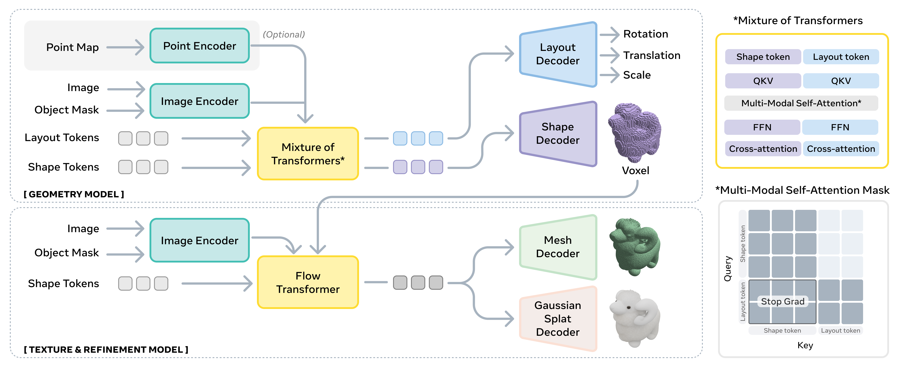
5.3 CUPID: Pose-Grounded Generative Reconstruction
While SAM 3D focuses on scene composition, CUPID (Huang et al., HKU, 2025) addresses a different facet of the generation-reconstruction gap: the problem of pose grounding. CUPID identifies pose as the key bridge between generation and reconstruction — to explain a single image, a model must recover dense 3D-to-2D correspondences between the generated object and the input viewpoint.
Key Insights. CUPID is built on three observations. First, since an image $I = P(\mathcal{O}, \theta)$ is a projection, it encodes information about both the 3D object $\mathcal{O}$ and the camera pose $\theta$ — yet most generation methods discard the pose information entirely, producing 3D outputs in an arbitrary orientation. Second, humans perceive objects in canonical poses — we expect a cup to open upward, a chair to face forward — and this canonical frame can be learned as a prior from data. Third, estimating camera pose relative to the canonical object frame makes the estimated poses meaningful and reusable for downstream tasks like robotic manipulation, where knowing that "the camera is 30 degrees to the left of the mug's front" is actionable information.
Pipeline. CUPID formulates pose-grounded reconstruction as estimating the joint posterior $p(\mathcal{O}, \theta \mid I)$ under the observation constraint $P(\mathcal{O}, \theta) \approx I$. Built on the Trellis two-stage framework, CUPID extends it with a novel pose estimation and conditioning mechanism:
- Occupancy and UV Cube Generation. In the first stage, a flow model generates both an occupancy cube (indicating active voxels) and a UV cube — a 3D volume where each active voxel stores its corresponding 2D pixel coordinate $(u, v)$ in the input image. Intuitively, the UV cube establishes dense 3D-to-2D correspondences: it tells us, for each point on the generated 3D surface, where that point projects in the input photograph. This is a reparameterization of camera pose as a spatially distributed quantity defined on the 3D occupancy grid, rather than a compact extrinsic matrix.
- Camera Pose via PnP. Given the 3D voxel positions and their corresponding 2D pixel coordinates from the UV cube, the camera pose $\mathbf{P}^*$ is recovered by solving a Perspective-n-Point (PnP) problem — a classical geometric computation that finds the camera matrix minimizing reprojection error across all correspondences. This yields an accurate, object-centric camera pose without requiring any external pose estimator.
- Pose-Aligned Feature Back-Projection. With the camera pose in hand, CUPID extracts pixel-aligned features from the input image (via DINOv2 and a lightweight convolutional head) and back-projects them onto the active voxels. Each voxel receives features sampled from the specific image location it projects to, providing dense, locally-attended conditioning rather than the global image features used by standard generators like Trellis. This local conditioning is what enables input-consistent reconstruction: the cat illustration on the front of the mug is preserved because the corresponding voxels receive the exact pixel features depicting that logo.
- Pose-Conditioned Geometry and Appearance Generation. A second-stage flow transformer generates the detailed structured latents $\{\mathbf{f}_i\}_{i=1}^L$ conditioned on the pose-aligned features, producing geometry and texture that are both geometrically accurate and texturally faithful to the input.
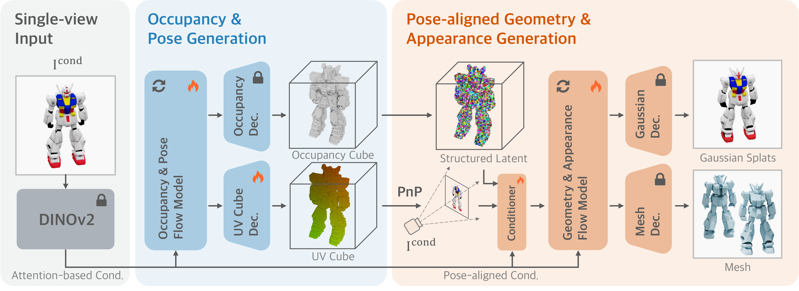
Results. CUPID outperforms leading 3D reconstruction methods by over 3 dB PSNR and over 10% Chamfer Distance reduction, while matching monocular pose estimators on pose accuracy. Compared to Trellis (its architectural backbone), CUPID produces substantially more input-consistent outputs — reducing the color drift, texture mismatch, and geometric inconsistencies that arise when a generator relies only on global image features without explicit pose grounding.
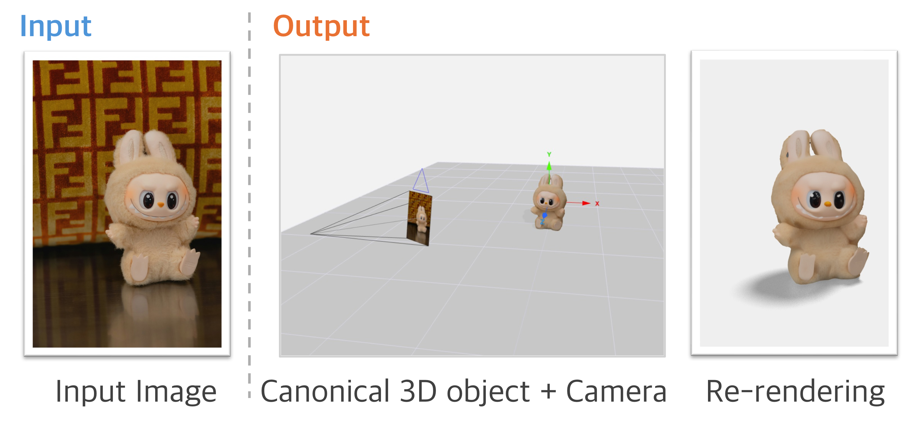
The broader lesson from both SAM 3D and CUPID is that the structured latent representations developed for generation (Section 4) provide a natural foundation for reconstruction as well. The sparse voxel grid, originally designed to decouple "where" from "what" in generation, turns out to be equally useful for anchoring generated content to observed images — whether through layout tokens (SAM 3D) or pose-aligned back-projection (CUPID). The unification of generation and reconstruction is not just a new task but a stress test for latent space design, and the methods that succeed are those whose latent representations are rich enough to support both faithful reconstruction and creative hallucination simultaneously.
6. Future Directions
The native latent 3D generation paradigm has matured rapidly — from blurry Michelangelo outputs to the high-fidelity, pose-grounded reconstructions of SAM 3D and CUPID in just two years. Yet the field remains far from the level of reliability, versatility, and controllability that downstream applications demand. Here we outline several frontiers where significant progress is needed.
6.1 Part-Level Generation
Current methods generate objects as monolithic wholes: a single latent representation produces an entire chair, car, or mug as one fused shape. Many applications, however, require modeling an object's compositional structure — decomposing it into semantically meaningful, individually manipulable parts. A chair should consist of a seat, backrest, and four legs; a laptop should separate into screen and keyboard. Part-level generation would enable fine-grained editing (swap the legs of a chair while keeping the seat), physics-aware simulation (each part has its own material properties and collision geometry), and controllable design (specify the style of each component independently). The challenge is learning to segment and generate parts without explicit part annotations, which are scarce in existing 3D datasets.
6.2 Articulated Objects
Beyond static parts, many real-world objects have articulated structures — joints, hinges, sliders, and other degrees of freedom that define how parts move relative to each other. A cabinet has doors that swing open; a pair of scissors has a pivot joint; a robotic arm has revolute joints with specific ranges of motion. Generating articulated objects requires producing not just the geometry of each part but also the articulation parameters: joint types, axes of rotation, limits of motion, and attachment points. This capability is critical for robotics, where a generated cabinet must have doors that actually open in simulation, and for animation, where rigged characters need joints that deform plausibly. Current generative models have no mechanism for predicting articulation, making this an important open problem.
6.3 Scene-Level Generation
The methods surveyed in this work operate primarily at the single-object level. SAM 3D takes a step toward scene understanding by reconstructing multiple objects with layout estimation, but true scene-level generation — synthesizing coherent multi-object environments from scratch — remains largely unsolved. A generated living room should contain furniture arranged in plausible spatial relationships, with consistent scale, realistic occlusion patterns, and meaningful object interactions (a book resting on a table, a lamp plugged into a wall). Scene generation requires reasoning about inter-object relationships, global spatial coherence, and physical constraints at a scale far beyond what current object-centric pipelines can handle.
6.4 Topology-Aware Generation
Current mesh extraction methods (Marching Cubes, FlexiCubes) produce meshes with poor topology: non-manifold edges, excessive triangle counts, irregular face distributions, and incorrect genus (e.g., a handle that should form a closed loop but is instead a solid blob). While these meshes may look correct when rendered, their topology makes them unusable for many downstream applications.
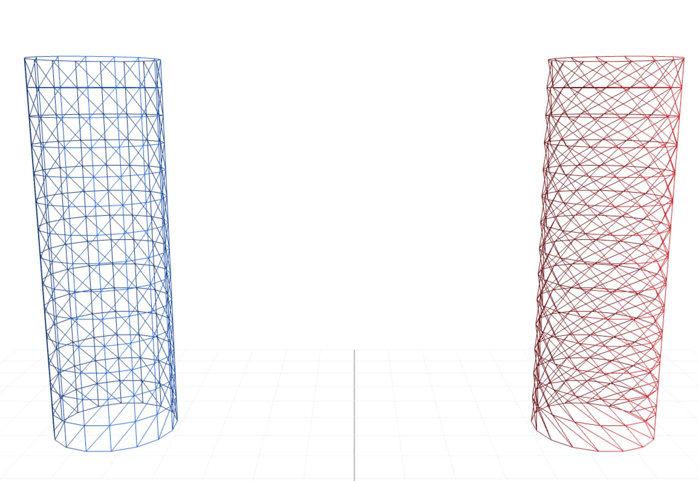
Fig. 22 illustrates this problem on the simplest possible shape: a cylinder. The blue mesh on the left has clean, regular edge loops — horizontal rings of edges that flow smoothly around the surface, connected by near-vertical edges forming axis-aligned rectangular faces (each rectangle composed of two triangles). This is the kind of topology that downstream applications demand: an animator can select any horizontal ring as a deformation loop, a UV unwrap follows the natural seams, and a subdivision surface refines predictably. The red mesh on the right represents the same geometry — identical silhouette, identical curvature — but its faces are tilted parallelograms rather than upright rectangles. Each quad is still composed of two triangles, yet the greater skew means that edges no longer form clean horizontal loops; instead they spiral around the surface. This seemingly minor difference has cascading consequences: loop selection breaks because no single edge ring closes horizontally, UV unwrapping introduces diagonal distortion, and deformation under rigging spreads unevenly across the skewed faces. A shaded render of the two cylinders would look indistinguishable, but their behavior under any downstream operation diverges dramatically.
This gap between visual correctness and structural correctness is the core of the topology problem. Rigging and animation require clean edge loops around joints; physics simulation requires watertight, manifold surfaces; 3D printing requires correct genus and wall thickness; game engines require low-poly meshes with efficient UV layouts. Yet current generative pipelines — which extract meshes from implicit fields via isosurface algorithms — have no mechanism for controlling edge flow, face regularity, or global connectivity. Topology is inherently discrete and global: it cannot be improved by local smoothing or subdivision, and it is fundamentally difficult to optimize with the gradient-based methods that drive current generative models. Developing generation methods that produce topologically correct meshes, or post-processing pipelines that can repair topology while preserving geometry, remains an important open challenge.
One promising direction for addressing the topology problem is to abandon implicit-field-then-extract pipelines altogether and instead generate mesh elements directly in sequence. If a model outputs vertices and faces one at a time, it can learn to produce clean edge loops, regular face distributions, and correct connectivity by construction — much like how autoregressive language models produce grammatically correct sentences token by token. This insight motivates the autoregressive approach to 3D generation.
6.5 Autoregressive 3D Generation
The spectacular success of autoregressive models in language (GPT) and 2D imagery suggests that token-by-token 3D generation could unlock similar scaling benefits. Rather than generating all latent codes simultaneously via diffusion or flow matching, an autoregressive model would produce 3D tokens sequentially, each conditioned on all previously generated tokens. This paradigm could leverage the scaling laws that have driven progress in language and vision, and it naturally supports variable-length outputs (objects of different complexity require different numbers of tokens). The central open question is tokenization: what discrete vocabulary best captures 3D structure? Unlike text (which has a natural vocabulary of words) or images (which can be quantized into patch tokens), 3D geometry has no established tokenization scheme. Candidates include quantized voxels, mesh face sequences, and learned codebook entries, but the optimal representation — one that balances geometric fidelity, compactness, and sequential coherence — remains unknown.
6.6 Closing Thoughts
3D generation is an important and rapidly advancing research area. The progression traced in this survey — from optimization-based lifting, through early native models like Point-E and Michelangelo, to structured latent approaches like TRELLIS and LATTICE — demonstrates remarkable progress in a short span. Yet many open challenges remain: compositional part-level generation, articulated objects, scene-scale synthesis, topology-aware meshing, and effective 3D tokenization for autoregressive models are all active frontiers.
Across these frontiers, a common thread emerges: latent space design remains the fundamental question. Part-level generation needs latents that respect compositional boundaries. Articulated objects need latents that encode joint parameters alongside geometry. Scene-level generation needs latents that capture inter-object relationships. Topology-aware methods need latents that encode connectivity, not just occupancy. Autoregressive approaches need latents that admit a natural sequential ordering. The convergence toward structured, localizable latents with decoupled generation — the progression from VecSet through Sparse Voxel to VoxSet — is a promising trajectory, but is far from settled.
Perhaps most importantly, future research should be driven by real applications, not just visual quality. The field has largely evaluated progress through rendered images: does the generated object look correct from a handful of viewpoints? But as Section 6.4 illustrates, a mesh that renders beautifully may be entirely unusable for rigging, animation, physics simulation, or 3D printing. The true measure of a generative 3D model is not whether its outputs pass visual inspection, but whether they can be directly inserted into real production pipelines — game engines, robotics simulators, CAD workflows, AR/VR applications — without manual cleanup. This means evaluating not just geometric fidelity but also mesh topology, part decomposability, articulation support, material quality, and compatibility with standard interchange formats. Shifting the evaluation paradigm from "does it look right?" to "can it be used?" will be essential for bridging the gap between research demonstrations and practical 3D content creation.
References
- Poole, B., Jain, A., Barron, J.T., & Mildenhall, B. (2022). Dreamfusion: Text-to-3D using 2D Diffusion. arXiv preprint arXiv:2209.14988.
- Liu, M., Shi, R., Chen, L., Zhang, Z., Xu, C., Wei, X., Chen, H., Zeng, C., Gu, J., & Su, H. (2024). One-2-3-45++: Fast Single Image to 3D Objects with Consistent Multi-View Generation and 3D Diffusion. Proceedings of the IEEE/CVF Conference on Computer Vision and Pattern Recognition, pp. 10072–10083.
- Nichol, A., Jun, H., Dhariwal, P., Mishkin, P., & Chen, M. (2022). Point-E: A System for Generating 3D Point Clouds from Complex Prompts. arXiv preprint arXiv:2212.08751.
- Jun, H. & Nichol, A. (2023). Shap-E: Generating Conditional 3D Implicit Functions. arXiv preprint arXiv:2305.02463.
- Zhao, Z., Liu, W., Chen, X., Zeng, X., Wang, R., Cheng, P., Fu, B., Chen, T., Yu, G., & Gao, S. (2023). Michelangelo: Conditional 3D Shape Generation based on Shape-Image-Text Aligned Latent Representation. Advances in Neural Information Processing Systems, 36, pp. 73969–73982.
- Zhang, B., Tang, J., Niessner, M., & Wonka, P. (2023). 3DShape2VecSet: A 3D Shape Representation for Neural Fields and Generative Diffusion Models. ACM Transactions on Graphics (TOG), 42(4), pp. 1–16.
- Xiang, J., Lv, Z., Xu, S., Deng, Y., Wang, R., Zhang, B., Chen, D., Tong, X., & Yang, J. (2025). Structured 3D Latents for Scalable and Versatile 3D Generation. Proceedings of the IEEE/CVF Conference on Computer Vision and Pattern Recognition, pp. 21469–21480.
- Lai, Z., Zhao, Y., Zhao, Z., Liu, H., Lin, Q., Huang, J., Guo, C., & Yue, X. (2025). LATTICE: Democratize High-Fidelity 3D Generation at Scale. arXiv preprint arXiv:2512.03052.
- Chen, X., Chu, F.-J., Gleize, P., Liang, K.J., Sax, A., Tang, H., Wang, W., Guo, M., Hardin, T., Li, X., et al. (2025). SAM 3D: 3Dfy Anything in Images. arXiv preprint arXiv:2511.16624.
- Huang, B., Duan, H., Zhao, Y., Zhao, Z., Ma, Y., & Gao, S. (2025). CUPID: Pose-Grounded Generative 3D Reconstruction from a Single Image. arXiv e-prints, arXiv:2510.